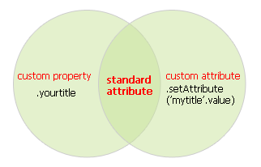

Attr & Prop For JS
JS中的 特性 与 属性
<a id="test" href="dummy" onclick="console.log('hello world!');" style="color:red;" myId="confused"></a>
如何获取id的属性值？
方式一：aDom.id
方式二：aDom.getAttribute('id')
如何获取myId的属性值？
方式一：aDom.myId
方式二：aDom.getAttribute('myId')
很抱歉，aDom.myId得到的是一个undefined
因为特性(attr) 和 属性(prop)是不同的

一、custom property，通过点方式操作
二、standard attribute，通过点方式和getAttribute方式操作
三、custom attribute，通过getAttribute方式操作
核心
STANDARD ATTRIBUTE
最后，IE5.5、IE6和IE7的Attr和Prop是一样的。